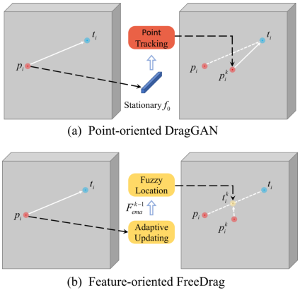

Our FreeDrag free the burden of erroneous point tracking and showcases significant advancement in the field of "drag" editing. Given an input image, the user can click pairs of handle points (red) and target points (blue) and draw a mask specifying the editable region (brighter areas) to "drag" the semantics across the image.
Abstract
To serve the intricate and varied demands of image editing, precise and flexible manipulation of image content is indispensable. Recently, DragGAN has achieved impressive editing results through point-based manipulation. However, we have observed that DragGAN struggles with miss tracking, where DragGAN encounters difficulty in effectively tracking the desired handle points, and ambiguous tracking, where the tracked points are situated within other regions that bear resemblance to the handle points. To deal with the above issues, we propose FreeDrag, which adopts a feature-oriented approach to free the burden on point tracking within the point-oriented methodology of DragGAN. The FreeDrag incorporates adaptive template features, line search, and fuzzy localization techniques to perform stable and efficient point-based image editing. Extensive experiments demonstrate that our method is superior to the DragGAN and enables stable point-based editing in challenging scenarios with similar structures, fine details, or under multi-point targets.
Method

The overview of the proposed FreeDrag. The customized movement scheme provides deliberate control of the difficulty of each motion and the adaptive updating \(F_{ema}\) enables a smooth feature migration during the total movement. They together facilitate a stable point movement for reliable point-based image editing.

The comparison between point-oriented DragGAN and feature-oriented FreeDrag. The \(p_i^{k}\) denotes the location of the handle point at the beginning of \(k\)-th motion. The most difference between DragGAN and FreeDrag is that DragGAN demands the precise location of \(p_i^{k}\) while FreeDrag potentially encourages \(p_i^{k}\) to move to customized \(t_i^{k}\) by forcing \(F_r(t_i^{k})\) to approach \(F_{ema}^{k-1}\).
More comparisons
Glasses
Legs
Eyes & Head
Microscope
Paper
FreeDrag: Point Tracking is Not What You Need for Interactive Point-based Image Editing
Pengyang Ling and Lin Chen and Pan Zhang and Huaian Chen and Yi Jin
arXiv, 2023.
@InProceedings{ling2023freedrag,
title = {FreeDrag: Point Tracking is Not You Need for Interactive Point-based Image Editing},
author = {Pengyang Ling and Lin Chen and Pan Zhang and Huaian Chen and Yi Jin},
booktitle = {arXiv preprint arXiv:2307.04684},
year = {2023},
}
Acknowledgements
This template was originally made by Phillip Isola and Richard Zhang for a colorful project, and inherits the modifications made by Jason Zhang, Elliott Wu, and Yujun Shi.